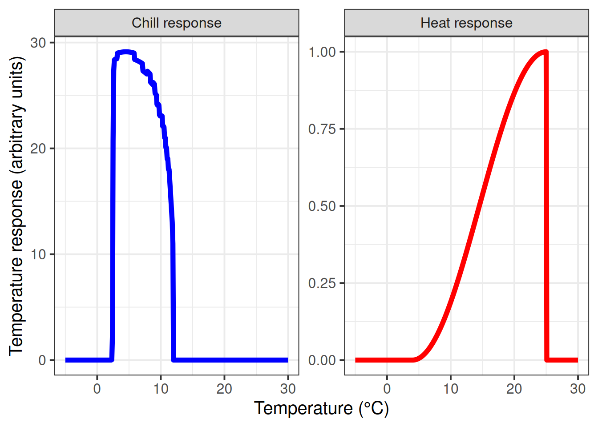

Chapter 31 The PhenoFlex model - a second look
Learning goals for this lesson
- Explore the chill and heat responses of our newly parameterized
PhenoFlexmodel for ‘Alexander Lucas’ pears - Be able to produce temperature response plots for such a model
31.1 Some basic diagnostics for our PhenoFlex fit
Once you’ve come up with a new model, it’s easy to get so excited about it that you forget to look for possible weaknesses. As the saying goes:
“Statisticians, like artists, have the bad habit of falling in love with their models”
This is not only true for statisticians, but for any kind of modelers. It may actually be a bigger problem for modelers without proper statistics training, who may lack sensitivity for all the things that can go wrong.
So let’s examine the PhenoFlex framework a bit, specifically focusing on the parameter set we determined. With a few quick helper functions, we can examine the temperature response curves during chilling and forcing that are described by the fitted parameters.
apply_const_temp <-
function(temp, A0, A1, E0, E1, Tf, slope, portions = 1200, deg_celsius = TRUE)
{
temp_vector <- rep(temp,
times = portions)
res <- chillR::DynModel_driver(temp = temp_vector,
A0 = A0,
A1 = A1,
E0 = E0,
E1 = E1,
Tf = Tf,
slope = slope,
deg_celsius = deg_celsius)
return(res$y[length(res$y)])
}
gen_bell <- function(par,
temp_values = seq(-5, 20, 0.1)) {
E0 <- par[5]
E1 <- par[6]
A0 <- par[7]
A1 <- par[8]
Tf <- par[9]
slope <- par[12]
y <- c()
for(i in seq_along(temp_values)) {
y[i] <- apply_const_temp(temp = temp_values[i],
A0 = A0,
A1 = A1,
E0 = E0,
E1 = E1,
Tf = Tf,
slope = slope)
}
return(invisible(y))
}
GDH_response <- function(T, par)
{Tb <- par[11]
Tu <- par[4]
Tc <- par[10]
GDH_weight <- rep(0, length(T))
GDH_weight[which(T >= Tb & T <= Tu)] <-
1/2 * (1 + cos(pi + pi * (T[which(T >= Tb & T <= Tu)] - Tb)/(Tu - Tb)))
GDH_weight[which(T > Tu & T <= Tc)] <-
(1 + cos(pi/2 + pi/2 * (T[which(T > Tu & T <= Tc)] -Tu)/(Tc - Tu)))
return(GDH_weight)
}The gen_bell function here produces the chill effectiveness curve, and the GDH_response function illustrates heat effectiveness.
Now let’s apply these functions to the parameter set we determined for our ‘Alexander Lucas’ pears. I’ll explore the temperature response in the range from -5 to 30°C, at a resolution of 0.1°C. I’ll first load the parameter set we saved in the last chapter on The PhenoFlex model.
Alex_par <- read_tab("data/PhenoFlex_parameters_Alexander_Lucas.csv")[,2]
temp_values = seq(-5, 30, 0.1)
temp_response <- data.frame(Temperature = temp_values,
Chill_response = gen_bell(Alex_par,
temp_values),
Heat_response = GDH_response(temp_values,
Alex_par))
pivoted_response <- pivot_longer(temp_response,
c(Chill_response,
Heat_response))
ggplot(pivoted_response,
aes(x = Temperature,
y = value)) +
geom_line(linewidth = 2,
aes(col = name)) +
ylab("Temperature response (arbitrary units)") +
xlab("Temperature (°C)") +
facet_wrap(vars(name),
scales = "free",
labeller =
labeller(name = c(Chill_response = c("Chill response"),
Heat_response = c("Heat response")))) +
scale_color_manual(values = c("Chill_response" = "blue",
"Heat_response" = "red")) +
theme_bw(base_size = 15) +
theme(legend.position = "none")
These response curves seem pretty sensible to me. During chilling, we see peak effectiveness around 2-3°C, and a rapid decline in chill effectiveness around 6°C. Note that this response curve assumes constant temperatures over extended periods, which is not something we’d usually see in an orchard.
The heat response also looks quite plausible. I wouldn’t place large bets on the accuracy of the final drop-off point, however, because temperatures around 30°C have probably never (or at least very rarely) been observed during dormancy.
31.2 Temperature response of the PhenoFlex components
When we evaluated the temperature response of the Dynamic Model in chapter Why PLS doesn’t always work, we didn’t just work with assumptions of constant temperatures, but we tested temperature responses for days with particular combinations of daily minimum and maximum temperatures. Let’s also do this here. PhenoFlex works a bit differently from the models we called earlier, so I’m not using the function we made in the chapter on Why PLS doesn’t always work here. The code is largely similar though:
latitude <- 50.6
month_range <- c(10, 11, 12, 1, 2, 3)
Tmins = c(-20:20)
Tmaxs = c(-15:30)
mins <- NA
maxs <- NA
chill_eff <- NA
heat_eff <- NA
month <- NA
simulation_par <- Alex_par
for(mon in month_range)
{days_month <- as.numeric(difftime(ISOdate(2002, mon+1, 1),
ISOdate(2002, mon, 1)))
if(mon == 12) days_month <- 31
weather <-
make_all_day_table(data.frame(Year = c(2002, 2002),
Month = c(mon, mon),
Day = c(1, days_month),
Tmin = c(0, 0),
Tmax = c(0, 0)))
for(tmin in Tmins)
for(tmax in Tmaxs)
if(tmax >= tmin)
{
hourtemps <- weather %>%
mutate(Tmin = tmin,
Tmax = tmax) %>%
stack_hourly_temps(latitude = latitude) %>%
pluck("hourtemps", "Temp")
chill_eff <-
c(chill_eff,
PhenoFlex(temp = hourtemps,
times = c(1: length(hourtemps)),
A0 = simulation_par[7],
A1 = simulation_par[8],
E0 = simulation_par[5],
E1 = simulation_par[6],
Tf = simulation_par[9],
slope = simulation_par[12],
deg_celsius = TRUE,
basic_output = FALSE)$y[length(hourtemps)] /
(length(hourtemps) / 24))
heat_eff <-
c(heat_eff,
cumsum(GDH_response(hourtemps,
simulation_par))[length(hourtemps)] /
(length(hourtemps) / 24))
mins <- c(mins, tmin)
maxs <- c(maxs, tmax)
month <- c(month, mon)
}
}
results <- data.frame(Month = month,
Tmin = mins,
Tmax = maxs,
Chill_eff = chill_eff,
Heat_eff = heat_eff) %>%
filter(!is.na(Month))
write.csv(results,
"data/model_sensitivity_PhenoFlex.csv")For the plotting part, we can use the Chill_sensitivity_temps function we produced in the Why PLS doesn’t always work chapter. With this, we’re now ready to make the temperature response plots:
Model_sensitivities_PhenoFlex <-
read.csv("data/model_sensitivity_PhenoFlex.csv")
CKA_weather <- read_tab("data/TMaxTMin1958-2019_patched.csv")
Chill_sensitivity_temps(Model_sensitivities_PhenoFlex,
CKA_weather,
temp_model = "Chill_eff",
month_range = c(10, 11, 12, 1, 2, 3),
Tmins = c(-20:20),
Tmaxs = c(-15:30),
legend_label = "Chill per day \n(arbitrary)") +
ggtitle("PhenoFlex chill efficiency ('Alexander Lucas')")If you compare the chill response plot for this version of the PhenoFlex model with the response plot for the ordinary Dynamic Model (shown in Why PLS doesn’t always work), you’ll notice that the response looks generally similar, but the actual ‘chill per day’ values are somewhat different. Overall, it seems like the effective temperature range is quite well aligned with what’s shown in the constant-temperature response plot above.
Chill_sensitivity_temps(Model_sensitivities_PhenoFlex,
CKA_weather,
temp_model = "Heat_eff",
month_range = c(10, 11, 12, 1, 2, 3),
Tmins = c(-20:20),
Tmaxs = c(-15:30),
legend_label = "Heat per day \n(arbitrary)") +
ggtitle("PhenoFlex heat efficiency ('Alexander Lucas')")We can also look at the heat response plot, which looks very similar to that of the ordinary Growing Degree Hours model. This is not surprising, since the constant-temperature plot above only indicated a drop-off in heat effectiveness at very high temperatures that don’t occur in Klein-Altendorf during the winter months.
31.3 Overall impression
Deciding whether this cultivar-specific parameterization of the PhenoFlex framework is actually accurate remains difficult. We’ve seen that the model was pretty good at predicting observed values, but this is only one of the criteria we should be using to judge model quality. We also know that, in principle, the model describes the best of our knowledge on how tree phenology responds to temperature during endo- and ecodormancy (because this knowledge was used in building the model).
The PhenoFlex model has 12 parameters, and we used it to predict 61 years of phenology data, with pretty good agreement between observed and predicted values. Given the much greater number of observations compared to parameters, it is unlikely that such a good fit is a statistical artefact. We do have to concede, however, that using a solver to fit parameters runs the risk of incurring problems that are similar to what can result from p-hacking.
The only way to guard against random results that provide good fits is to take a good look at our results, evaluate them in light of our expectations and decide if we can consider them plausible. In this case, I see good reasons for making this call. The chill efficiency curve points to an effective range of chilling conditions that is close to what most researchers and growers have considered effective in the past.
Overall, I’m pretty happy with the performance!
31.4 Caveats and assumptions
I want to repeat here that the parameter ranges we allowed for the model fit were quite restricted and may not have allowed the model to roam freely. Even though the effective ranges for chill and heat accumulation differed considerably from the original Dynamic Model, we have to acknowledge that this may have influenced the results.
We still have a few assumptions in this model. One such assumption concerns the start date of chill accumulation. We don’t set this explicitly, but we assume chill accumulation begins whenever the first chill starts to accrue. Another assumption obviously concerns the general nature of chill and heat accumulation dynamics, which we expect to follow the patterns dictated by the Dynamic and Growing Degree Hours models. Finally, we assume both of these processes to follow the same rules all throughout the respective seasons. I’m not aware of anyone having challenged (or acknowledged) this assumption in the past, but it is still worth stating it here.
A last caveat concerns the chill and heat units the model produces. Since the entire temperature response curves are fitted, the numbers of chill and heat units can’t be compared between analyses, crops or locations. This is clearly suboptimal, because it greatly complicates the production of chill or heat maps that aren’t specific to a particular cultivar.
31.5 Outlook
There’s a lot that still needs be done with this model. It needs to be tested, we need better guidance for parameter choice, we should think of ways to standardize the chill and heat units, and we should use it in lots of contexts, across climate zones. We should also explore the usefulness of the PhenoFlex framework in the context of future phenology projections, frost risk assessments etc.
There is no shortage of things to do… wanna help?